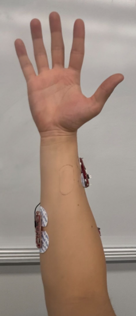
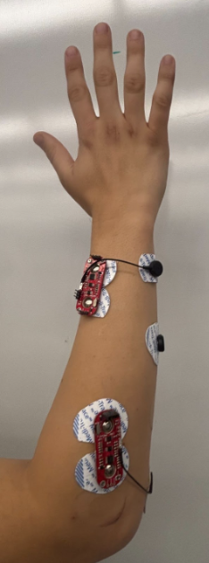

Overview
The goal of the Electrical system of MyoAmp was to read surface Electromyography Signals from the user’s arm, getting this data to the pico, and actuating the linear actuators responsible for closing the user’s hand. There are a couple components of the electrical design that allow it to properly do this. Those components are the battery management, sensor data, and mechanical actuation. Due to a common ground the system components will draw whatever power they need to.
Completed system
Circuit Diagram Schematic
Sensor Placement
Extensor Digitorum

The Extensor Digitorum is a muscle located in the forearm which is responsible for extending & flexing the fingers. The strongest sEMG readings occur when the user abducts and flexes their fingers away from the palm.
Abductor Policus Longus
The Abductor Policus Longus is an extrinsic muscle located in the hand and it abducts the thumb at the wrist. The strongest sEMG readings occur when the user abducts and flexes their thumb away from the palm. Minor sEMG readings also occur when the user adducts the thumb into their palm.
Flexor Digitorum Superficialis
The Flexor Digitorum Superficialis is an extrinsic flexor and is located on the anterior side of the forearm and is responsible for adduction of the fingers. We placed the Sensor on the side of the belly of this muscle so that the strongest sEMG readings occur when the user contracts their pinky and ring fingers. There is also a moderately strong sEMG reading when the index and middle fingers are contracted. The difference in signal strength allows us to differentiate between the fingers with just this one sensor.
Anterior Palm
The Extensor Digitorum is a muscle located in the forearm which is responsible for extending & flexing the fingers. The strongest sEMG readings occur when the user abducts and flexes their fingers away from the palm.
Posterior Palm
The Abductor Policus Longus is an extrinsic muscle located in the hand and it abducts the thumb at the wrist. The strongest sEMG readings occur when the user abducts and flexes their thumb away from the palm. Minor sEMG readings also occur when the user adducts the thumb into their palm.
Troubleshooting and Next Steps
Throughout the process of creating the electrical system for MyoAmp we had to troubleshoot many things.
First, we accidentally put too much current into the sEMG sensors due to a lack of overcurrent protection. We accounted for this error by adding current limiting and filtering to make sure that the sensors were getting a safe consistent 3 volts.
Second, the TB6612FNG motor driver was not powerful enough to drive 2 linear actuators so the TB6612FNG motor driver ended up breaking. In the future we will replace the TB612FNG motor driver with a motor driver that is powerful enough. On top of this our second motor driver never shipped to us and we ended up using a different motor driver, although it worked, it would be better if we used the same motor drivers throughout the project for reliability and troubleshooting purposes.
Third, one of our buck converters stopped working when we accidentally put too much current into the sEMG sensors and we don’t know why. We assume that it is an error with the buck converters we got so our next steps are to integrate a custom buck converter onto the perfboard itself rather than relying on an external module. To get around this error with the limited time we had we had to rely on a portable charger to power the raspberry pi pico.
Our next steps for the electrical subsystem would be to integrate custom buck converters onto a custom PCB to minimize the space taken up by the electrical board. We would also choose a new motor driver that can handle driving the 3 linear actuators.